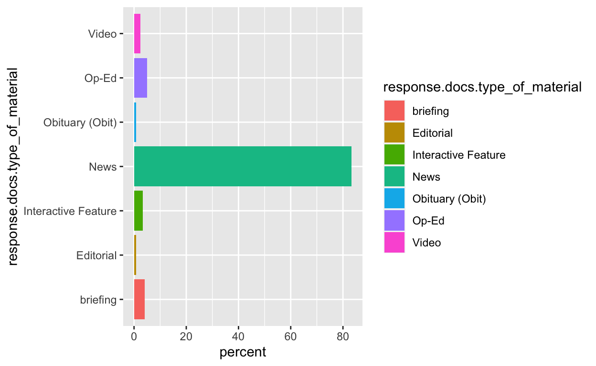
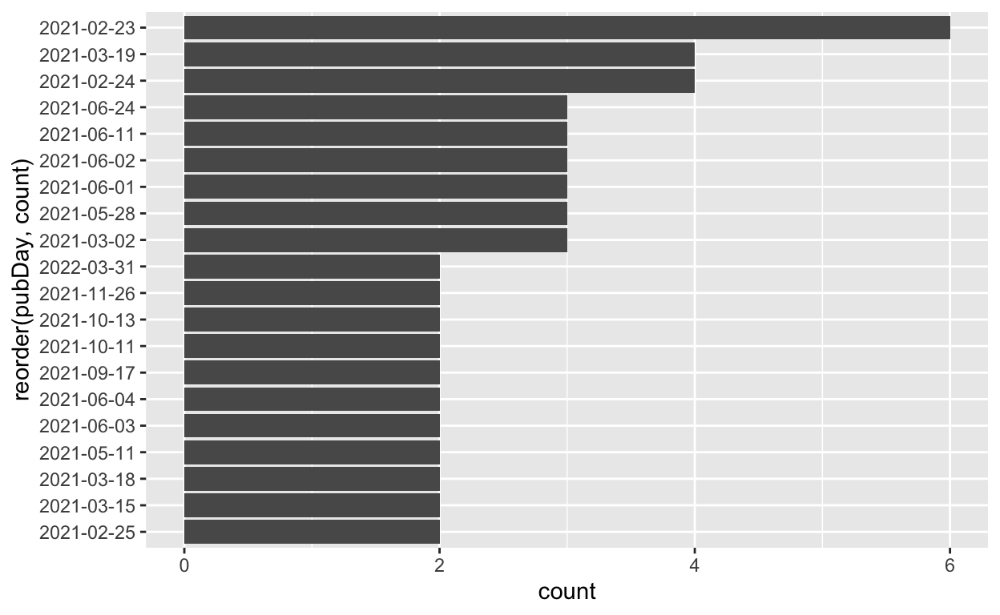

Today we will be grabbing some data from the New York Times database via their API, then running some basic string manipulations, trying out the tidytext format, and creating some basic plots.
#https://developer.nytimes.com/
Connect to the New York Times API and send a query
We have to decide which New York Times articles we are interested in examining. For this exercise, I chose articles about Deb Haaland, the current US Secretary of the Interior. As a member of the Laguna Pueblo Tribe, Haaland is the first Native American to serve as Cabinet secretary. Very cool!

#create an object called x with the results of our query ("haaland")
# the from JSON flatten the JSON object, then convert to a data frame
t <- fromJSON("http://api.nytimes.com/svc/search/v2/articlesearch.json?q=haaland&api-key=NTKBHbsb6XFEkGymGumAiba7n3uBvs8V", flatten = TRUE) #the string following "key=" is your API key
class(t) #what type of object is t?
t <- t %>%
data.frame()
#Inspect our data
#now what class is it?
# how big is it?
dim(t)
# what variables are we working with?
names(t)
#t <- readRDS("nytDat.rds") #in case of API emergency :)
The name format, response.xxx.xxx, is a legacy of the json nested hierarchy.
Lets look at a piece of text. Our data object has a variable called response.docs.snippet that contains a short excerpt, or snippet from the article. Lets grab a snippet and try out some basic stringr functions.
t$response.docs.snippet[9]
#assign a snippet to x to use as fodder for stringr functions. You can follow along using the sentence on the next line.
x <- "Her nomination as secretary of the interior is historic, but as the first Native cabinet member, she would have to strike a delicate balance."
tolower(x)
str_split(x, ','); str_split(x, 't')
str_replace(x, 'historic', 'without precedent')
str_replace(x, ' ', '_') #first one
#how do we replace all of them?
str_replace_all(x,' ', '_')
str_detect(x, 't'); str_detect(x, 'tive') ### is pattern in the string? T/F
str_locate(x, 't'); str_locate_all(x, 'as')
OK, its working but we want more data. Lets set some parameters for a bigger query
term <- "Haaland" # Need to use + to string together separate words
begin_date <- "20210120"
end_date <- "20220401"
#construct the query url using API operators
baseurl <- paste0("http://api.nytimes.com/svc/search/v2/articlesearch.json?q=",term,
"&begin_date=",begin_date,"&end_date=",end_date,
"&facet_filter=true&api-key=","NTKBHbsb6XFEkGymGumAiba7n3uBvs8V", sep="")
#examine our query url
baseurl
[1] "http://api.nytimes.com/svc/search/v2/articlesearch.json?q=Haaland&begin_date=20210120&end_date=20220401&facet_filter=true&api-key=NTKBHbsb6XFEkGymGumAiba7n3uBvs8V"#this code allows for obtaining multiple pages of query results
initialQuery <- fromJSON(baseurl)
maxPages <- round((initialQuery$response$meta$hits[1] / 10)-1)
pages <- list()
for(i in 0:maxPages){
nytSearch <- fromJSON(paste0(baseurl, "&page=", i), flatten = TRUE) %>% data.frame()
message("Retrieving page ", i)
pages[[i+1]] <- nytSearch
Sys.sleep(6)
}
class(nytSearch)
#need to bind the pages and create a tibble from nytDa
nytDat <- rbind(pages)
[1] 120 33nytDat %>%
group_by(response.docs.type_of_material) %>%
summarize(count=n()) %>%
mutate(percent = (count / sum(count))*100) %>%
ggplot() +
geom_bar(aes(y=percent, x=response.docs.type_of_material, fill=response.docs.type_of_material), stat = "identity") + coord_flip()

nytDat %>%
mutate(pubDay=gsub("T.*","",response.docs.pub_date)) %>%
group_by(pubDay) %>%
summarise(count=n()) %>%
filter(count >= 2) %>%
ggplot() +
geom_bar(aes(x=reorder(pubDay, count), y=count), stat="identity") + coord_flip()

The New York Times doesnt make full text of the articles available through the API. But we can use the first paragraph of each article.
names(nytDat)
[1] "status"
[2] "copyright"
[3] "response.docs.abstract"
[4] "response.docs.web_url"
[5] "response.docs.snippet"
[6] "response.docs.lead_paragraph"
[7] "response.docs.source"
[8] "response.docs.multimedia"
[9] "response.docs.keywords"
[10] "response.docs.pub_date"
[11] "response.docs.document_type"
[12] "response.docs.news_desk"
[13] "response.docs.section_name"
[14] "response.docs.type_of_material"
[15] "response.docs._id"
[16] "response.docs.word_count"
[17] "response.docs.uri"
[18] "response.docs.print_section"
[19] "response.docs.print_page"
[20] "response.docs.subsection_name"
[21] "response.docs.headline.main"
[22] "response.docs.headline.kicker"
[23] "response.docs.headline.content_kicker"
[24] "response.docs.headline.print_headline"
[25] "response.docs.headline.name"
[26] "response.docs.headline.seo"
[27] "response.docs.headline.sub"
[28] "response.docs.byline.original"
[29] "response.docs.byline.person"
[30] "response.docs.byline.organization"
[31] "response.meta.hits"
[32] "response.meta.offset"
[33] "response.meta.time" paragraph <- names(nytDat)[6] #The 6th column, "response.doc.lead_paragraph", is the one we want here.
tokenized <- nytDat %>%
unnest_tokens(word, paragraph)
tokenized[,34]
[1] "the" "map" "dots"
[4] "resembling" "a" "scattergram"
[7] "of" "america" "point"
[10] "to" "snow" "covered"
[13] "pinnacles" "remote" "islands"
[16] "and" "places" "in"
[19] "between" "washington" "the"
[22] "united" "states" "government"
[25] "netted" "a" "record"
[28] "4.37" "billion" "on"
[31] "friday" "from" "the"
[34] "sale" "of" "six"
[37] "offshore" "wind" "leases"
[40] "off" "the" "coasts"
[43] "of" "new" "york"
[46] "and" "new" "jersey"
[49] "a" "major" "step"
[52] "in" "the" "biden"
[55] "administrations" "goal" "of"
[58] "ushering" "in" "a"
[61] "future" "powered" "by"
[64] "renewable" "energy" "that"
[67] "first" "day" "for"
[70] "an" "incoming" "manager"
[73] "at" "a" "new"
[76] "club" "must" "be"
[79] "overwhelming" "there" "is"
[82] "an" "entire" "squad"
[85] "of" "players" "to"
[88] "meet" "to" "get"
[91] "to" "know" "to"
[94] "win" "over" "there"
[97] "is" "a" "staff"
[100] "nervous" "of" "your"
[103] "intentions" "and" "fearful"
[106] "of" "what" "the"
[109] "future" "may" "hold"
[112] "to" "convince" "and"
[115] "hopefully" "to" "command"
[118] "washington" "the" "interior"
[121] "department" "on" "friday"
[124] "recommended" "that" "the"
[127] "federal" "government" "raise"
[130] "the" "fees" "that"
[133] "oil" "and" "gas"
[136] "companies" "pay" "to"
[139] "drill" "on" "public"
[142] "lands" "the" "first"
[145] "increase" "in" "those"
[148] "rent" "and" "royalty"
[151] "rates" "since" "1920"
[154] "washington" "a" "decision"
[157] "by" "the" "trump"
[160] "administration" "to" "move"
[163] "the" "headquarters" "of"
[166] "the" "bureau" "of"
[169] "land" "management" "to"
[172] "grand" "junction" "colo"
[175] "from" "washington" "left"
[178] "the" "agency" "with"
[181] "high" "vacancy" "rates"
[184] "as" "veteran" "employees"
[187] "especially" "african" "americans"
[190] "quit" "rather" "than"
[193] "relocate" "a" "government"
[196] "watchdog" "said" "in"
[199] "a" "report" "issued"
[202] "this" "week" "somewhere"
[205] "in" "a" "darkened"
[208] "room" "erling" "haaland"
[211] "was" "watching" "injury"
[214] "meant" "he" "would"
[217] "not" "be" "able"
[220] "to" "take" "the"
[223] "field" "for" "norways"
[226] "most" "significant" "match"
[229] "in" "20" "years"
[232] "the" "netherlands" "return"
[235] "to" "partial" "lockdown"
[238] "last" "weekend" "meant"
[241] "with" "the" "game"
[244] "played" "behind" "closed"
[247] "doors" "he" "would"
[250] "not" "even" "be"
[253] "able" "to" "support"
[256] "his" "national" "team"
[259] "from" "the" "stands"
[262] "washington" "president" "biden"
[265] "announced" "on" "monday"
[268] "that" "his" "administration"
[271] "was" "moving" "to"
[274] "block" "new" "federal"
[277] "oil" "and" "gas"
[280] "leasing" "within" "a"
[283] "10" "mile" "radius"
[286] "around" "chaco" "canyon"
[289] "in" "new" "mexico"
[292] "one" "of" "the"
[295] "nations" "oldest" "and"
[298] "most" "culturally" "significant"
[301] "native" "american" "sites"
[304] "deb" "haaland" "president"
[307] "bidens" "secretary" "of"
[310] "the" "interior" "was"
[313] "among" "this" "years"
[316] "more" "recognizable" "amateur"
[319] "runners" "forget" "pantsuit"
[322] "nation" "the" "washington"
[325] "dress" "code" "is"
[328] "changing" "one" "swearing"
[331] "in" "at" "a"
[334] "time" "washington" "senator"
[337] "joe" "manchin" "iii"
[340] "the" "west" "virginia"
[343] "democrat" "who" "heads"
[346] "the" "senate" "energy"
[349] "committee" "announced" "wednesday"
[352] "that" "he" "would"
[355] "vote" "to" "confirm"
[358] "representative" "deb" "haaland"
[361] "of" "new" "mexico"
[364] "to" "head" "the"
[367] "interior" "department" "most"
[370] "likely" "ensuring" "that"
[373] "one" "of" "president"
[376] "bidens" "most" "embattled"
[379] "cabinet" "nominees" "will"
[382] "be" "confirmed" "to"
[385] "office" "despite" "escalating"
[388] "opposition" "to" "her"
[391] "from" "republicans" "the"
[394] "senate" "approved" "representative"
[397] "deb" "haaland" "of"
[400] "new" "mexico" "to"
[403] "lead" "the" "interior"
[406] "department" "making" "her"
[409] "the" "first" "native"
[412] "american" "to" "lead"
[415] "a" "cabinet" "agency"
[418] "on" "thursday" "deb"
[421] "haaland" "made" "history"
[424] "when" "she" "began"
[427] "her" "job" "as"
[430] "secretary" "of" "the"
[433] "interior" "becoming" "the"
[436] "first" "native" "american"
[439] "to" "lead" "a"
[442] "cabinet" "level" "agency"
[445] "washington" "interior" "secretary"
[448] "deb" "haaland" "has"
[451] "advised" "president" "biden"
[454] "to" "restore" "sweeping"
[457] "environmental" "protections" "to"
[460] "three" "major" "national"
[463] "monuments" "that" "had"
[466] "been" "stripped" "away"
[469] "by" "former" "president"
[472] "donald" "j" "trump"
[475] "this" "weekend" "listen"
[478] "to" "a" "collection"
[481] "of" "narrated" "articles"
[484] "from" "around" "the"
[487] "new" "york" "times"
[490] "read" "aloud" "by"
[493] "the" "reporters" "who"
[496] "wrote" "the" "story"
[499] "as" "the" "danger"
[502] "bubbled" "to" "the"
[505] "surface" "there" "was"
[508] "an" "audible" "intake"
[511] "of" "breath" "among"
[514] "manchester" "citys" "substitutes"
[517] "once" "it" "had"
[520] "passed" "a" "few"
[523] "seconds" "later" "as"
[526] "they" "exchanged" "glances"
[529] "of" "admiration" "of"
[532] "relief" "came" "a"
[535] "little" "murmur" "of"
[538] "appreciation" "in" "the"
[541] "silence" "of" "the"
[544] "stadium" "you" "could"
[547] "hear" "the" "sounds"
[550] "of" "game" "recognizing"
[553] "game" "washington" "the"
[556] "biden" "administration" "announced"
[559] "on" "wednesday" "a"
[562] "plan" "to" "develop"
[565] "large" "scale" "wind"
[568] "farms" "along" "nearly"
[571] "the" "entire" "coastline"
[574] "of" "the" "united"
[577] "states" "the" "first"
[580] "long" "term" "strategy"
[583] "from" "the" "government"
[586] "to" "produce" "electricity"
[589] "from" "offshore" "turbines"
[592] "representative" "deb" "haaland"
[595] "of" "new" "mexico"
[598] "president" "bidens" "pick"
[601] "to" "head" "the"
[604] "interior" "department" "sought"
[607] "tuesday" "to" "find"
[610] "the" "line" "between"
[613] "her" "past" "remarks"
[616] "as" "an" "activist"
[619] "opposing" "the" "fossil"
[622] "fuel" "industry" "and"
[625] "her" "prospective" "role"
[628] "at" "the" "helm"
[631] "of" "an" "agency"
[634] "that" "oversees" "drilling"
[637] "and" "conservation" "on"
[640] "the" "nations" "more"
[643] "than" "500" "million"
[646] "acres" "of" "public"
[649] "land" "a" "senate"
[652] "committee" "on" "thursday"
[655] "approved" "deb" "haaland"
[658] "to" "be" "the"
[661] "next" "secretary" "of"
[664] "the" "interior" "with"
[667] "the" "support" "of"
[670] "senator" "lisa" "murkowski"
[673] "of" "alaska" "a"
[676] "key" "republican" "from"
[679] "an" "oil" "producing"
[682] "state" "virtually" "ensuring"
[685] "her" "confirmation" "by"
[688] "the" "senate" "later"
[691] "this" "month" "senator"
[694] "joe" "manchin" "iii"
[697] "the" "west" "virginia"
[700] "democrat" "who" "heads"
[703] "the" "senate" "energy"
[706] "committee" "announced" "wednesday"
[709] "that" "he" "will"
[712] "vote" "to" "confirm"
[715] "representative" "deb" "haaland"
[718] "of" "new" "mexico"
[721] "to" "head" "the"
[724] "interior" "department" "washington"
[727] "president" "biden" "announced"
[730] "on" "friday" "that"
[733] "he" "will" "use"
[736] "his" "executive" "authority"
[739] "to" "restore" "sweeping"
[742] "environmental" "protections" "to"
[745] "three" "major" "national"
[748] "monuments" "that" "had"
[751] "been" "stripped" "away"
[754] "by" "former" "president"
[757] "donald" "j" "trump"
[760] "washington" "representative" "deb"
[763] "haaland" "of" "new"
[766] "mexico" "made" "history"
[769] "on" "monday" "when"
[772] "the" "senate" "confirmed"
[775] "her" "as" "president"
[778] "bidens" "secretary" "of"
[781] "the" "interior" "making"
[784] "her" "the" "first"
[787] "native" "american" "to"
[790] "lead" "a" "cabinet"
[793] "agency" "to" "hear"
[796] "more" "audio" "stories"
[799] "from" "publications" "like"
[802] "the" "new" "york"
[805] "times" "download" "audm"
[808] "for" "iphone" "or"
[811] "android" "washington" "when"
[814] "representative" "deb" "haaland"
[817] "was" "tapped" "in"
[820] "december" "to" "be"
[823] "president" "bidens" "interior"
[826] "secretary" "the" "decision"
[829] "was" "hailed" "as"
[832] "historic" "she" "was"
[835] "the" "first" "native"
[838] "american" "ever" "nominated"
[841] "to" "serve" "in"
[844] "cabinet" "in" "this"
[847] "case" "to" "head"
[850] "a" "department" "that"
[853] "for" "much" "of"
[856] "the" "nations" "history"
[859] "has" "mistreated" "and"
[862] "neglected" "indigenous" "americans"
[865] "washington" "the" "biden"
[868] "administration" "on" "wednesday"
[871] "restored" "protections" "for"
[874] "migratory" "birds" "that"
[877] "were" "loosened" "under"
[880] "former" "president" "donald"
[883] "j" "trump" "a"
[886] "move" "celebrated" "by"
[889] "conservationists" "but" "expected"
[892] "to" "exacerbate" "tensions"
[895] "between" "the" "administration"
[898] "and" "the" "oil"
[901] "and" "gas" "industry"
[904] "interior" "secretary" "deb"
[907] "haaland" "announced" "friday"
[910] "that" "the" "bureau"
[913] "of" "land" "management"
[916] "will" "move" "its"
[919] "headquarters" "back" "to"
[922] "washington" "a" "reversal"
[925] "of" "a" "heavily"
[928] "criticized" "trump" "administration"
[931] "decision" "to" "relocate"
[934] "the" "public" "lands"
[937] "agency" "to" "grand"
[940] "junction" "colo" "washington"
[943] "peering" "at" "a"
[946] "sea" "of" "white"
[949] "flags" "blanketing" "the"
[952] "national" "mall" "dr"
[955] "laura" "a" "valleni"
[958] "recalled" "the" "scores"
[961] "of" "pregnant" "women"
[964] "who" "had" "contracted"
[967] "the" "coronavirus" "at"
[970] "her" "hospital" "in"
[973] "south" "carolina" "babies"
[976] "have" "been" "born"
[979] "prematurely" "mothers" "have"
[982] "died" "and" "a"
[985] "surge" "of" "children"
[988] "has" "overwhelmed" "the"
[991] "pediatric" "unit" "for"
[994] "the" "past" "two"
[997] "months" "she" "said"
[1000] "phoenix" "in" "politics"
[1003] "issues" "of" "true"
[1006] "importance" "arent" "always"
[1009] "the" "ones" "that"
[1012] "consume" "our" "attention"
[1015] "my" "candidate" "for"
[1018] "the" "most" "underrated"
[1021] "of" "all" "public"
[1024] "concerns" "is" "the"
[1027] "treatment" "of" "animals"
[1030] "an" "issue" "as"
[1033] "revealing" "as" "any"
[1036] "about" "our" "character"
[1039] "and" "sense" "of"
[1042] "fairness" "if" "you"
[1045] "want" "hard" "evidence"
[1048] "to" "track" "the"
[1051] "moral" "progress" "of"
[1054] "humanity" "watch" "how"
[1057] "we" "deal" "with"
[1060] "other" "creatures" "who"
[1063] "are" "defenseless" "against"
[1066] "our" "power" "and"
[1069] "will" "in" "1990"
[1072] "when" "congress" "passed"
[1075] "a" "law" "that"
[1078] "set" "criteria" "under"
[1081] "which" "federally" "recognized"
[1084] "native" "american" "tribes"
[1087] "could" "reclaim" "ancient"
[1090] "burial" "remains" "and"
[1093] "sacred" "objects" "legislators"
[1096] "hoped" "to" "encourage"
[1099] "the" "return" "of"
[1102] "items" "by" "museums"
[1105] "and" "other" "institutions"
[1108] "but" "more" "than"
[1111] "three" "decades" "later"
[1114] "some" "officials" "acknowledge"
[1117] "that" "the" "law"
[1120] "known" "as" "the"
[1123] "native" "american" "graves"
[1126] "protection" "and" "repatriation"
[1129] "act" "or" "nagpra"
[1132] "has" "not" "been"
[1135] "as" "effective" "as"
[1138] "they" "had" "hoped"
[1141] "representative" "deb" "haaland"
[1144] "of" "new" "mexico"
[1147] "president" "bidens" "pick"
[1150] "to" "head" "the"
[1153] "interior" "department" "was"
[1156] "questioned" "on" "past"
[1159] "remarks" "as" "an"
[1162] "activist" "opposing" "the"
[1165] "fossil" "fuel" "industry"
[1168] "the" "united" "states"
[1171] "will" "search" "federal"
[1174] "boarding" "schools" "for"
[1177] "possible" "burial" "sites"
[1180] "of" "native" "american"
[1183] "children" "hundreds" "of"
[1186] "thousands" "of" "whom"
[1189] "were" "forcibly" "taken"
[1192] "from" "their" "communities"
[1195] "to" "be" "culturally"
[1198] "assimilated" "in" "the"
[1201] "schools" "for" "more"
[1204] "than" "a" "century"
[1207] "the" "interior" "secretary"
[1210] "announced" "on" "tuesday"
[1213] "the" "white" "house"
[1216] "has" "directed" "the"
[1219] "interior" "departments" "chief"
[1222] "of" "staff" "jennifer"
[1225] "van" "der" "heide"
[1228] "to" "step" "away"
[1231] "from" "her" "position"
[1234] "after" "she" "tried"
[1237] "to" "plan" "an"
[1240] "indoor" "party" "with"
[1243] "roughly" "50" "attendees"
[1246] "to" "celebrate" "the"
[1249] "confirmation" "of" "interior"
[1252] "secretary" "deb" "haaland"
[1255] "according" "to" "an"
[1258] "administration" "official" "with"
[1261] "knowledge" "of" "the"
[1264] "matter" "see" "full"
[1267] "results" "and" "maps"
[1270] "from" "the" "new"
[1273] "mexico" "special" "election"
[1276] "picture" "this" "predicament"
[1279] "described" "by" "our"
[1282] "climate" "reporter" "lisa"
[1285] "friedman" "in" "her"
[1288] "latest" "article" "as"
[1291] "a" "paradox" "worthy"
[1294] "of" "kafka" "in"
[1297] "order" "to" "break"
[1300] "through" "the" "earth"
[1303] "and" "tap" "the"
[1306] "oil" "in" "the"
[1309] "national" "petroleum" "reserve"
[1312] "in" "alaska" "conocophillips"
[1315] "must" "install" "chillers"
[1318] "into" "the" "thawing"
[1321] "permafrost" "washington" "president"
[1324] "bidens" "cabinet" "took"
[1327] "steps" "toward" "belated"
[1330] "completion" "on" "tuesday"
[1333] "with" "the" "confirmation"
[1336] "of" "a" "united"
[1339] "nations" "ambassador" "and"
[1342] "an" "agriculture" "secretary"
[1345] "but" "other" "top"
[1348] "posts" "remained" "locked"
[1351] "in" "partisan" "confirmation"
[1354] "hearings" "washington" "a"
[1357] "federal" "judge" "in"
[1360] "louisiana" "has" "blocked"
[1363] "the" "biden" "administrations"
[1366] "suspension" "of" "new"
[1369] "oil" "and" "gas"
[1372] "leases" "on" "federal"
[1375] "lands" "and" "waters"
[1378] "in" "the" "first"
[1381] "major" "legal" "roadblock"
[1384] "for" "president" "bidens"
[1387] "quest" "to" "cut"
[1390] "fossil" "fuel" "pollution"
[1393] "and" "conserve" "public"
[1396] "lands" "melanie" "stansbury"
[1399] "a" "democrat" "won"
[1402] "a" "landslide" "victory"
[1405] "in" "a" "special"
[1408] "house" "election" "in"
[1411] "new" "mexico" "on"
[1414] "tuesday" "claiming" "the"
[1417] "seat" "previously" "held"
[1420] "by" "interior" "secretary"
[1423] "deb" "haaland" "and"
[1426] "easily" "turning" "back"
[1429] "a" "republican" "effort"
[1432] "to" "make" "the"
[1435] "race" "a" "referendum"
[1438] "on" "rising" "crime"
[1441] "in" "the" "albuquerque"
[1444] "based" "district" "washington"
[1447] "as" "the" "interior"
[1450] "department" "awaits" "its"
[1453] "new" "secretary" "the"
[1456] "agency" "is" "already"
[1459] "moving" "to" "lock"
[1462] "in" "key" "parts"
[1465] "of" "president" "bidens"
[1468] "environmental" "agenda" "particularly"
[1471] "on" "oil" "and"
[1474] "gas" "restrictions" "laying"
[1477] "the" "groundwork" "to"
[1480] "fulfill" "some" "of"
[1483] "the" "administrations" "most"
[1486] "consequential" "climate" "change"
[1489] "promises" "manchester" "england"
[1492] "there" "were" "borussia"
[1495] "dortmund" "players" "sprawled"
[1498] "on" "the" "turf"
[1501] "their" "bodies" "suddenly"
[1504] "exhausted" "and" "their"
[1507] "spirits" "sunk" "at"
[1510] "the" "last" "moment"
[1513] "manchester" "citys" "substitutes"
[1516] "and" "coaching" "staff"
[1519] "had" "greeted" "the"
[1522] "goal" "that" "inflicted"
[1525] "the" "damage" "with"
[1528] "great" "guttural" "roars"
[1531] "leaping" "from" "their"
[1534] "seats" "pumping" "their"
[1537] "fists" "in" "the"
[1540] "air" "washington" "despite"
[1543] "president" "bidens" "pledge"
[1546] "to" "aggressively" "cut"
[1549] "the" "pollution" "from"
[1552] "fossil" "fuels" "that"
[1555] "is" "driving" "climate"
[1558] "change" "his" "administration"
[1561] "has" "quietly" "taken"
[1564] "actions" "this" "month"
[1567] "that" "will" "guarantee"
[1570] "the" "drilling" "and"
[1573] "burning" "of" "oil"
[1576] "and" "gas" "for"
[1579] "decades" "to" "come"
[1582] "with" "pressure" "growing"
[1585] "from" "the" "biden"
[1588] "administration" "two" "native"
[1591] "american" "tribes" "in"
[1594] "oklahoma" "have" "agreed"
[1597] "to" "consider" "reversing"
[1600] "their" "policies" "of"
[1603] "denying" "citizenship" "to"
[1606] "descendants" "of" "black"
[1609] "people" "who" "were"
[1612] "enslaved" "by" "them"
[1615] "before" "the" "civil"
[1618] "war" "as" "he"
[1621] "guides" "the" "financial"
[1624] "system" "through" "the"
[1627] "coronavirus" "pandemic" "jerome"
[1630] "powell" "the" "chair"
[1633] "of" "the" "federal"
[1636] "reserve" "has" "worked"
[1639] "to" "keep" "cash"
[1642] "flowing" "through" "the"
[1645] "economy" "hes" "done"
[1648] "it" "by" "tamping"
[1651] "down" "interest" "rates"
[1654] "and" "sometimes" "speaking"
[1657] "up" "to" "a"
[1660] "degree" "thats" "rare"
[1663] "for" "a" "fed"
[1666] "director" "to" "urge"
[1669] "legislative" "action" "on"
[1672] "behalf" "of" "workers"
[1675] "and" "businesses" "park"
[1678] "rapids" "minn" "the"
[1681] "protesters" "who" "gathered"
[1684] "in" "the" "boreal"
[1687] "forests" "of" "northern"
[1690] "minnesota" "came" "from"
[1693] "across" "the" "country"
[1696] "native" "american" "tribes"
[1699] "and" "their" "supporters"
[1702] "environmentalists" "and" "religious"
[1705] "leaders" "all" "to"
[1708] "fight" "an" "expansion"
[1711] "of" "line" "3"
[1714] "a" "9" "billion"
[1717] "pipeline" "operated" "by"
[1720] "the" "canadian" "company"
[1723] "enbridge" "that" "would"
[1726] "carry" "hundreds" "of"
[1729] "thousands" "of" "barrels"
[1732] "of" "oil" "through"
[1735] "minnesotas" "delicate" "watersheds"
[1738] "and" "tribal" "lands"
[1741] "to" "hear" "more"
[1744] "audio" "stories" "from"
[1747] "publications" "like" "the"
[1750] "new" "york" "times"
[1753] "download" "audm" "for"
[1756] "iphone" "or" "android"
[1759] "as" "the" "interior"
[1762] "department" "awaits" "its"
[1765] "new" "secretary" "the"
[1768] "agency" "is" "already"
[1771] "moving" "to" "lock"
[1774] "in" "key" "parts"
[1777] "of" "president" "bidens"
[1780] "environmental" "agenda" "particularly"
[1783] "on" "oil" "and"
[1786] "gas" "restrictions" "laying"
[1789] "the" "groundwork" "to"
[1792] "fulfill" "some" "of"
[1795] "the" "administrations" "most"
[1798] "consequential" "promises" "to"
[1801] "address" "climate" "change"
[1804] "when" "extreme" "weather"
[1807] "knocked" "out" "power"
[1810] "and" "water" "in"
[1813] "texas" "last" "week"
[1816] "it" "represented" "a"
[1819] "profound" "warning" "for"
[1822] "the" "rest" "of"
[1825] "the" "country" "the"
[1828] "nations" "vital" "infrastructure"
[1831] "remains" "fundamentally" "unprepared"
[1834] "for" "the" "shocks"
[1837] "of" "climate" "change"
[1840] "over" "the" "pandemic"
[1843] "year" "people" "took"
[1846] "to" "appreciating" "the"
[1849] "renewable" "delights" "of"
[1852] "this" "ragged" "and"
[1855] "tortured" "planet" "like"
[1858] "never" "before" "in"
[1861] "this" "country" "many"
[1864] "national" "parks" "saw"
[1867] "record" "crowds" "in"
[1870] "2020" "and" "eight"
[1873] "million" "more" "americans"
[1876] "went" "hiking" "than"
[1879] "in" "the" "year"
[1882] "before" "washington" "when"
[1885] "president" "biden" "introduced"
[1888] "representative" "deb" "haaland"
[1891] "of" "new" "mexico"
[1894] "as" "his" "pick"
[1897] "for" "interior" "secretary"
[1900] "making" "her" "the"
[1903] "first" "native" "american"
[1906] "to" "be" "selected"
[1909] "for" "a" "cabinet"
[1912] "position" "he" "acknowledged"
[1915] "the" "countrys" "long"
[1918] "history" "of" "failing"
[1921] "the" "lands" "first"
[1924] "citizens" "we" "are"
[1927] "among" "the" "women"
[1930] "of" "bears" "ears"
[1933] "indigenous" "women" "who"
[1936] "support" "our" "families"
[1939] "and" "communities" "in"
[1942] "the" "protections" "of"
[1945] "ancestral" "lands" "we"
[1948] "come" "from" "din"
[1951] "nuche" "pueblo" "and"
[1954] "other" "allied" "native"
[1957] "nations" "from" "these"
[1960] "southwestern" "lands" "twin"
[1963] "buttes" "rise" "they"
[1966] "are" "known" "as"
[1969] "bears" "ears" "after"
[1972] "a" "public" "outcry"
[1975] "and" "a" "legal"
[1978] "fight" "the" "indian"
[1981] "health" "service" "has"
[1984] "agreed" "to" "keep"
[1987] "the" "emergency" "departments"
[1990] "and" "inpatient" "care"
[1993] "open" "for" "another"
[1996] "year" "at" "a"
[1999] "hospital" "in" "northwestern"
[2002] "new" "mexico" "serving"
[2005] "9,100" "tribal" "citizens"
[2008] "settling" "at" "least"
[2011] "temporarily" "a" "dispute"
[2014] "that" "had" "become"
[2017] "a" "flash" "point"
[2020] "between" "tribal" "communities"
[2023] "and" "the" "federal"
[2026] "government" "over" "the"
[2029] "quality" "and" "accessibility"
[2032] "of" "health" "care"
[2035] "albuquerque" "in" "theory"
[2038] "the" "special" "election"
[2041] "to" "fill" "interior"
[2044] "secretary" "deb" "haalands"
[2047] "seat" "in" "the"
[2050] "house" "should" "not"
[2053] "be" "competitive" "president"
[2056] "biden" "carried" "the"
[2059] "albuquerque" "based" "district"
[2062] "by" "23" "points"
[2065] "last" "year" "and"
[2068] "there" "has" "not"
[2071] "been" "a" "close"
[2074] "race" "for" "congress"
[2077] "here" "since" "george"
[2080] "w" "bush" "was"
[2083] "president" "a" "couple"
[2086] "of" "weeks" "ago"
[2089] "a" "tweet" "caught"
[2092] "my" "eye" "it"
[2095] "seemed" "unexpectedly" "to"
[2098] "reveal" "that" "a"
[2101] "continentwide" "african" "super"
[2104] "league" "was" "under"
[2107] "construction" "cross" "border"
[2110] "leagues" "as" "regular"
[2113] "readers" "will" "know"
[2116] "are" "something" "that"
[2119] "this" "newsletter" "generally"
[2122] "supports" "they" "are"
[2125] "the" "most" "readily"
[2128] "available" "way" "of"
[2131] "addressing" "soccers" "chronic"
[2134] "financial" "imbalance" "washington"
[2137] "the" "biden" "administration"
[2140] "on" "tuesday" "suspended"
[2143] "oil" "drilling" "leases"
[2146] "in" "the" "arctic"
[2149] "national" "wildlife" "refuge"
[2152] "unspooling" "a" "signature"
[2155] "achievement" "of" "the"
[2158] "trump" "presidency" "and"
[2161] "delivering" "on" "a"
[2164] "promise" "by" "president"
[2167] "biden" "to" "protect"
[2170] "the" "fragile" "alaskan"
[2173] "tundra" "from" "fossil"
[2176] "fuel" "extraction" "when"
[2179] "president" "biden" "picked"
[2182] "neera" "tanden" "to"
[2185] "be" "budget" "director"
[2188] "at" "the" "prodding"
[2191] "of" "his" "top"
[2194] "adviser" "ron" "klain"
[2197] "the" "white" "house"
[2200] "girded" "for" "that"
[2203] "one" "big" "battle"
[2206] "comforted" "by" "the"
[2209] "likelihood" "that" "many"
[2212] "other" "cabinet" "confirmations"
[2215] "would" "be" "comparative"
[2218] "pillow" "fights" "did"
[2221] "you" "follow" "the"
[2224] "news" "this" "week"
[2227] "take" "our" "quiz"
[2230] "to" "see" "how"
[2233] "well" "you" "stack"
[2236] "up" "with" "other"
[2239] "times" "readers" "the"
[2242] "bald" "eagle" "population"
[2245] "in" "the" "lower"
[2248] "48" "states" "has"
[2251] "quadrupled" "since" "2009"
[2254] "researchers" "said" "this"
[2257] "week" "underscoring" "decades"
[2260] "of" "efforts" "to"
[2263] "protect" "a" "species"
[2266] "that" "was" "once"
[2269] "on" "the" "brink"
[2272] "of" "extinction" "muriel"
[2275] "lezak" "a" "neuropsychologist"
[2278] "who" "wrote" "a"
[2281] "landmark" "textbook" "in"
[2284] "the" "early" "days"
[2287] "of" "her" "discipline"
[2290] "that" "became" "an"
[2293] "essential" "guide" "to"
[2296] "the" "description" "and"
[2299] "evaluation" "of" "brain"
[2302] "injuries" "and" "disorders"
[2305] "died" "on" "oct"
[2308] "6" "in" "portland"
[2311] "ore" "she" "was"
[2314] "94" "the" "biden"
[2317] "administration" "on" "tuesday"
[2320] "announced" "its" "final"
[2323] "approval" "of" "the"
[2326] "nations" "first" "commercial"
[2329] "scale" "offshore" "wind"
[2332] "farm" "a" "major"
[2335] "step" "toward" "president"
[2338] "bidens" "goal" "of"
[2341] "expanding" "renewable" "energy"
[2344] "production" "across" "the"
[2347] "united" "states" "at"
[2350] "a" "memorial" "for"
[2353] "the" "passengers" "who"
[2356] "fought" "back" "against"
[2359] "terrorists" "aboard" "united"
[2362] "airlines" "flight" "93"
[2365] "vice" "president" "kamala"
[2368] "harris" "warned" "that"
[2371] "the" "tragedy" "of"
[2374] "the" "sept" "11"
[2377] "attacks" "had" "shown"
[2380] "how" "fear" "can"
[2383] "be" "used" "to"
[2386] "sow" "division" "and"
[2389] "stressed" "that" "americas"
[2392] "diversity" "was" "its"
[2395] "greatest" "asset" "it"
[2398] "does" "not" "require"
[2401] "a" "great" "leap"
[2404] "of" "the" "imagination"
[2407] "to" "envision" "the"
[2410] "final" "few" "weeks"
[2413] "of" "the" "season"
[2416] "playing" "out" "like"
[2419] "this" "after" "a"
[2422] "year" "that" "provided"
[2425] "stark" "new" "evidence"
[2428] "of" "how" "racial"
[2431] "inequities" "and" "a"
[2434] "lack" "of" "federal"
[2437] "funding" "had" "left"
[2440] "tribal" "communities" "and"
[2443] "indigenous" "people" "especially"
[2446] "vulnerable" "to" "crises"
[2449] "like" "the" "pandemic"
[2452] "president" "biden" "and"
[2455] "democrats" "in" "congress"
[2458] "are" "seeking" "to"
[2461] "address" "those" "longstanding"
[2464] "issues" "with" "a"
[2467] "huge" "infusion" "of"
[2470] "federal" "aid" "patrisse"
[2473] "cullors" "a" "founder"
[2476] "of" "the" "black"
[2479] "lives" "matter" "movement"
[2482] "on" "womens" "history"
[2485] "month" "with" "their"
[2488] "signature" "1.9" "trillion"
[2491] "coronavirus" "rescue" "plan"
[2494] "enshrined" "in" "law"
[2497] "president" "biden" "and"
[2500] "congressional" "democrats" "will"
[2503] "shift" "gears" "this"
[2506] "week" "to" "try"
[2509] "to" "sell" "the"
[2512] "public" "on" "what"
[2515] "they" "have" "done"
[2518] "and" "begin" "tackling"
[2521] "other" "thornier" "pieces"
[2524] "of" "their" "policy"
[2527] "agenda" "former" "president"
[2530] "donald" "j" "trump"
[2533] "endorsed" "kelly" "tshibaka"
[2536] "on" "friday" "in"
[2539] "her" "race" "against"
[2542] "senator" "lisa" "murkowski"
[2545] "of" "alaska" "giving"
[2548] "his" "support" "to"
[2551] "an" "outsider" "candidate"
[2554] "who" "promoted" "false"
[2557] "claims" "of" "election"
[2560] "fraud" "last" "year"
[2563] "and" "has" "written"
[2566] "articles" "in" "support"
[2569] "of" "gay" "conversion"
[2572] "therapy" "the" "american"
[2575] "west" "embraces" "more"
[2578] "than" "its" "share"
[2581] "of" "spectacular" "landscapes"
[2584] "but" "theres" "nothing"
[2587] "else" "quite" "like"
[2590] "the" "vast" "swath"
[2593] "of" "canyons" "mesas"
[2596] "sandstone" "spires" "and"
[2599] "arches" "that" "stretches"
[2602] "some" "80" "miles"
[2605] "from" "north" "to"
[2608] "south" "in" "the"
[2611] "southeast" "corner" "of"
[2614] "utah" "ranging" "in"
[2617] "altitude" "from" "sagebrush"
[2620] "flats" "to" "pinyon"
[2623] "and" "juniper" "forests"
[2626] "and" "old" "growth"
[2629] "stands" "of" "ponderosa"
[2632] "pine" "and" "douglas"
[2635] "fir" "livingston" "mont"
[2638] "a" "slaughter" "of"
[2641] "wolves" "is" "underway"
[2644] "in" "montana" "idaho"
[2647] "and" "wyoming" "that"
[2650] "has" "no" "precedent"
[2653] "in" "the" "past"
[2656] "100" "years" "washington"
[2659] "centuries" "of" "land"
[2662] "loss" "and" "forced"
[2665] "relocation" "have" "left"
[2668] "native" "americans" "significantly"
[2671] "more" "exposed" "to"
[2674] "the" "effects" "of"
[2677] "climate" "change" "new"
[2680] "data" "show" "adding"
[2683] "to" "the" "debate"
[2686] "over" "how" "to"
[2689] "address" "climate" "change"
[2692] "and" "racial" "inequity"
[2695] "in" "the" "united"
[2698] "states" "the" "biden"
[2701] "administration" "plans" "to"
[2704] "restore" "environmental" "protections"
[2707] "to" "tongass" "national"
[2710] "forest" "in" "alaska"
[2713] "one" "of" "the"
[2716] "worlds" "largest" "intact"
[2719] "temperate" "rain" "forests"
[2722] "that" "had" "been"
[2725] "stripped" "away" "by"
[2728] "former" "president" "donald"
[2731] "j" "trump" "the"
[2734] "biden" "administration" "said"
[2737] "wednesday" "that" "it"
[2740] "had" "canceled" "two"
[2743] "mining" "leases" "that"
[2746] "would" "have" "allowed"
[2749] "a" "copper" "mine"
[2752] "to" "be" "built"
[2755] "near" "an" "area"
[2758] "of" "pristine" "wilderness"
[2761] "in" "minnesota" "it"
[2764] "was" "a" "busy"
[2767] "day" "on" "capitol"
[2770] "hill" "washington" "the"
[2773] "supreme" "court" "agreed"
[2776] "on" "monday" "to"
[2779] "hear" "a" "challenge"
[2782] "to" "the" "constitutionality"
[2785] "of" "the" "indian"
[2788] "child" "welfare" "act"
[2791] "of" "1978" "which"
[2794] "makes" "it" "hard"
[2797] "to" "remove" "native"
[2800] "american" "children" "from"
[2803] "their" "parents" "their"
[2806] "tribes" "and" "their"
[2809] "heritage" "washington" "a"
[2812] "federal" "judge" "in"
[2815] "alaska" "on" "wednesday"
[2818] "blocked" "construction" "permits"
[2821] "for" "an" "expansive"
[2824] "oil" "drilling" "project"
[2827] "on" "the" "states"
[2830] "north" "slope" "that"
[2833] "was" "designed" "to"
[2836] "produce" "more" "than"
[2839] "100,000" "barrels" "of"
[2842] "oil" "a" "day"
[2845] "for" "the" "next"
[2848] "30" "years" "native"
[2851] "americans" "have" "been"
[2854] "systematically" "dispossessed" "of"
[2857] "their" "ancestral" "lands"
[2860] "for" "more" "than"
[2863] "a" "century" "thanks"
[2866] "to" "federal" "land"
[2869] "management" "policies" "but"
[2872] "a" "spate" "of"
[2875] "new" "real" "estate"
[2878] "projects" "highlights" "efforts"
[2881] "to" "reclaim" "that"
[2884] "territory" "as" "tribes"
[2887] "invest" "in" "land"
[2890] "development" "in" "an"
[2893] "effort" "to" "diversify"
[2896] "their" "revenue" "base"
[2899] "and" "support" "their"
[2902] "members" "washington" "democrats"
[2905] "are" "preparing" "to"
[2908] "muscle" "through" "the"
[2911] "nomination" "of" "tracy"
[2914] "stone" "manning" "to"
[2917] "head" "the" "bureau"
[2920] "of" "land" "management"
[2923] "despite" "united" "opposition"
[2926] "from" "republicans" "who"
[2929] "have" "branded" "her"
[2932] "an" "eco" "terrorist"
[2935] "because" "of" "her"
[2938] "involvement" "in" "a"
[2941] "tree" "spiking" "episode"
[2944] "as" "a" "graduate"
[2947] "student" "in" "the"
[2950] "1980s" "it" "is"
[2953] "hard" "to" "overstate"
[2956] "the" "joy" "of"
[2959] "the" "environmental" "community"
[2962] "when" "joe" "biden"
[2965] "ascended" "to" "the"
[2968] "white" "house" "in"
[2971] "place" "of" "a"
[2974] "man" "who" "called"
[2977] "climate" "change" "a"
[2980] "hoax" "it" "got"
[2983] "someone" "who" "saw"
[2986] "global" "warming" "for"
[2989] "the" "grave" "threat"
[2992] "it" "is" "and"
[2995] "who" "spoke" "at"
[2998] "his" "inaugural" "of"
[3001] "the" "worlds" "duty"
[3004] "to" "respond" "to"
[3007] "a" "cry" "for"
[3010] "survival" "that" "comes"
[3013] "from" "the" "planet"
[3016] "itself" "it" "got"
[3019] "someone" "who" "saw"
[3022] "government" "regulations" "not"
[3025] "as" "job" "killers"
[3028] "but" "as" "appropriate"
[3031] "levers" "to" "achieve"
[3034] "cleaner" "air" "and"
[3037] "water" "it" "got"
[3040] "someone" "who" "viewed"
[3043] "the" "public" "lands"
[3046] "not" "as" "a"
[3049] "resource" "to" "be"
[3052] "exploited" "by" "commercial"
[3055] "interests" "but" "as"
[3058] "natures" "gift" "to"
[3061] "future" "generations" "a"
[3064] "worthy" "custodian" "in"
[3067] "short" "to" "the"
[3070] "environmental" "ethic" "of"
[3073] "teddy" "roosevelt" "jimmy"
[3076] "carter" "and" "bill"
[3079] "clinton" "and" "someone"
[3082] "who" "would" "spend"
[3085] "trillions" "to" "make"
[3088] "it" "all" "happen"
[3091] "have" "you" "been"
[3094] "paying" "attention" "to"
[3097] "the" "news" "recently"
[3100] "see" "how" "many"
[3103] "of" "these" "10"
[3106] "questions" "you" "can"
[3109] "get" "right" "washington"
[3112] "senator" "lisa" "murkowski"
[3115] "republican" "of" "alaska"
[3118] "announced" "on" "friday"
[3121] "that" "she" "would"
[3124] "seek" "re" "election"
[3127] "formally" "entering" "what"
[3130] "is" "expected" "to"
[3133] "be" "the" "most"
[3136] "expensive" "and" "challenging"
[3139] "race" "of" "her"
[3142] "political" "career" "after"
[3145] "voting" "to" "impeach"
[3148] "former" "president" "donald"
[3151] "j" "trump" "on"
[3154] "wednesday" "night" "ron"
[3157] "klain" "the" "white"
[3160] "house" "chief" "of"
[3163] "staff" "went" "on"
[3166] "television" "to" "proclaim"
[3169] "that" "the" "biden"
[3172] "administration" "was" "still"
[3175] "fighting" "our" "guts"
[3178] "out" "to" "get"
[3181] "neera" "tanden" "confirmed"
[3184] "as" "the" "head"
[3187] "of" "the" "office"
[3190] "of" "management" "and"
[3193] "budget" "not" "too"
[3196] "long" "ago" "maren"
[3199] "lundby" "seemed" "a"
[3202] "lock" "for" "a"
[3205] "gold" "medal" "at"
[3208] "the" "2022" "winter"
[3211] "olympics" "lundby" "27"
[3214] "a" "ski" "jumper"
[3217] "from" "norway" "had"
[3220] "won" "gold" "at"
[3223] "the" "2018" "games"
[3226] "in" "pyeongchang" "south"
[3229] "korea" "three" "straight"
[3232] "world" "cup" "titles"
[3235] "from" "2018" "to"
[3238] "2020" "and" "gold"
[3241] "medals" "in" "the"
[3244] "2019" "and" "2021"
[3247] "world" "championships" "washington"
[3250] "the" "senate" "narrowly"
[3253] "approved" "tracy" "stone"
[3256] "manning" "on" "thursday"
[3259] "to" "lead" "the"
[3262] "bureau" "of" "land"
[3265] "management" "capping" "months"
[3268] "of" "efforts" "by"
[3271] "republican" "lawmakers" "to"
[3274] "block" "her" "confirmation"
[3277] "because" "of" "her"
[3280] "connection" "to" "a"
[3283] "decades" "old" "tree"
[3286] "spiking" "incident" "gray"
[3289] "wolves" "will" "regain"
[3292] "federal" "protection" "across"
[3295] "most" "of" "the"
[3298] "lower" "48" "united"
[3301] "states" "following" "a"
[3304] "court" "ruling" "thursday"
[3307] "that" "struck" "down"
[3310] "a" "trump" "administration"
[3313] "decision" "to" "take"
[3316] "the" "animals" "off"
[3319] "the" "endangered" "species"
[3322] "list" "members" "of"
[3325] "congress" "on" "tuesday"
[3328] "threatened" "to" "withhold"
[3331] "tens" "of" "millions"
[3334] "of" "dollars" "in"
[3337] "federal" "funding" "from"
[3340] "four" "native" "american"
[3343] "tribes" "in" "oklahoma"
[3346] "adding" "to" "renewed"
[3349] "public" "pressure" "to"
[3352] "end" "policies" "that"
[3355] "discriminate" "against" "descendants"
[3358] "of" "black" "people"
[3361] "who" "were" "enslaved"
[3364] "by" "the" "tribes"
[3367] "before" "the" "civil"
[3370] "war" "a" "federal"
[3373] "board" "on" "thursday"
[3376] "approved" "the" "renaming"
[3379] "of" "16" "sites"
[3382] "in" "texas" "whose"
[3385] "names" "include" "the"
[3388] "word" "negro" "a"
[3391] "change" "long" "sought"
[3394] "by" "politicians" "and"
[3397] "activists" "in" "the"
[3400] "state" "but" "one"
[3403] "that" "will" "affect"
[3406] "only" "a" "small"
[3409] "fraction" "of" "the"
[3412] "hundreds" "of" "racist"
[3415] "names" "of" "towns"
[3418] "and" "geographical" "features"
[3421] "that" "remain" "in"
[3424] "the" "united" "states"
[3427] "did" "you" "follow"
[3430] "the" "news" "this"
[3433] "week" "take" "our"
[3436] "quiz" "to" "see"
[3439] "how" "well" "you"
[3442] "stack" "up" "with"
[3445] "other" "times" "readers"
[3448] "kathryn" "dunn" "tenpas"
[3451] "senior" "fellow" "at"
[3454] "the" "university" "of"
[3457] "virginias" "miller" "center"
[3460] "washington" "a" "federal"
[3463] "judge" "on" "thursday"
[3466] "canceled" "oil" "and"
[3469] "gas" "leases" "of"
[3472] "more" "than" "80"
[3475] "million" "acres" "in"
[3478] "the" "gulf" "of"
[3481] "mexico" "ruling" "that"
[3484] "the" "biden" "administration"
[3487] "did" "not" "sufficiently"
[3490] "take" "climate" "change"
[3493] "into" "account" "when"
[3496] "it" "auctioned" "the"
[3499] "leases" "late" "last"
[3502] "year" "washington" "the"
[3505] "biden" "administration" "on"
[3508] "friday" "announced" "that"
[3511] "it" "would" "begin"
[3514] "the" "formal" "process"
[3517] "of" "selling" "leases"
[3520] "to" "develop" "offshore"
[3523] "wind" "farms" "in"
[3526] "shallow" "waters" "between"
[3529] "long" "island" "and"
[3532] "new" "jersey" "as"
[3535] "part" "of" "its"
[3538] "push" "to" "transition"
[3541] "the" "nation" "to"
[3544] "renewable" "energy" "sunday"
[3547] "puzzle" "today" "we"
[3550] "have" "a" "visually"
[3553] "unusual" "challenge" "by"
[3556] "two" "excellent" "constructors"
[3559] "matthew" "stock" "and"
[3562] "will" "nediger" "who"
[3565] "are" "collaborating" "for"
[3568] "the" "first" "time"
[3571] "in" "the" "new"
[3574] "york" "times" "according"
[3577] "to" "the" "puzzles"
[3580] "print" "introduction" "the"
[3583] "two" "connected" "online"
[3586] "and" "developed" "a"
[3589] "theme" "conceived" "by"
[3592] "mr" "stock" "using"
[3595] "direct" "messages" "on"
[3598] "twitter" "and" "swapping"
[3601] "grids" "until" "they"
[3604] "were" "both" "happy"
[3607] "they" "have" "yet"
[3610] "to" "meet" "even"
[3613] "on" "video" "pride"
[3616] "celebrations" "in" "june"
[3619] "with" "their" "marches"
[3622] "parades" "and" "parties"
[3625] "can" "trace" "their"
[3628] "histories" "back" "to"
[3631] "a" "fiery" "street"
[3634] "demonstration" "in" "1970"
[3637] "the" "year" "after"
[3640] "a" "violent" "uprising"
[3643] "at" "the" "stonewall"
[3646] "inn" "in" "manhattan"
[3649] "that" "galvanized" "the"
[3652] "modern" "gay" "rights"
[3655] "movement" "the" "european"
[3658] "championship" "generally" "considered"
[3661] "the" "biggest" "soccer"
[3664] "tournament" "after" "the"
[3667] "world" "cup" "is"
[3670] "being" "held" "this"
[3673] "summer" "after" "a"
[3676] "years" "delay" "because"
[3679] "of" "the" "coronavirus"
[3682] "pandemic" "heres" "a"
[3685] "rundown" "on" "the"
[3688] "teams" "the" "players"
[3691] "and" "the" "host"
[3694] "cities" "for" "what"
[3697] "is" "still" "being"
[3700] "called" "euro" "2020"
[3703] "as" "the" "ocean"
[3706] "rises" "homeowners" "in"
[3709] "avon" "a" "tiny"
[3712] "town" "on" "the"
[3715] "outer" "banks" "of"
[3718] "north" "carolina" "are"
[3721] "confronting" "a" "tax"
[3724] "increase" "of" "almost"
[3727] "50" "percent" "to"
[3730] "defend" "the" "only"
[3733] "road" "into" "town"
[3736] "residents" "want" "somebody"
[3739] "else" "to" "pay"
[3742] "for" "it" "local"
[3745] "officials" "say" "theyre"
[3748] "on" "their" "own"
[3751] "nearly" "two" "decades"
[3754] "ago" "when" "the"
[3757] "new" "zealand" "highway"
[3760] "authority" "was" "planning"
[3763] "the" "waikato" "expressway"
[3766] "people" "from" "the"
[3769] "mori" "tribe" "ngti"
[3772] "naho" "objected" "the"
[3775] "highway" "would" "encroach"
[3778] "on" "an" "area"
[3781] "that" "in" "mori"
[3784] "tradition" "was" "governed"
[3787] "by" "a" "water"
[3790] "dwelling" "creature" "a"
[3793] "taniwha" "the" "world"
[3796] "cup" "draw" "has"
[3799] "set" "the" "field"
[3802] "even" "though" "the"
[3805] "invitation" "list" "for"
[3808] "this" "years" "tournament"
[3811] "in" "qatar" "isnt"
[3814] "yet" "complete" "yet"
[3817] "even" "as" "the"
[3820] "teams" "now" "know"
[3823] "who" "and" "when"
[3826] "they" "will" "play"
[3829] "there" "are" "still"
[3832] "plenty" "of" "questions"
[3835] "about" "how" "things"
[3838] "will" "play" "out"
[3841] "in" "soccers" "first"
[3844] "winter" "world" "cup"
[3847] "heres" "a" "primer"
[3850] "on" "the" "worlds"
[3853] "greatest" "sporting" "spectacle"
[3856] "president" "biden" "has"
[3859] "proclaimed" "monday" "oct"
[3862] "11" "as" "indigenous"
[3865] "peoples" "day" "becoming"
[3868] "the" "first" "u.s"
[3871] "president" "to" "formally"
[3874] "recognize" "the" "day"
[3877] "the" "biden" "administration"
[3880] "has" "defended" "a"
[3883] "contentious" "pipeline" "project"
[3886] "that" "would" "carry"
[3889] "hundreds" "of" "thousands"
[3892] "of" "barrels" "of"
[3895] "oil" "through" "minnesotas"
[3898] "delicate" "watersheds" "urging"
[3901] "in" "a" "court"
[3904] "brief" "that" "a"
[3907] "challenge" "brought" "by"
[3910] "local" "tribes" "and"
[3913] "environmental" "groups" "be"
[3916] "thrown" "out" "a"
[3919] "northern" "branch" "of"
[3922] "the" "gulf" "stream"
[3925] "the" "vast" "ocean"
[3928] "current" "that" "runs"
[3931] "from" "west" "africa"
[3934] "to" "the" "americas"
[3937] "up" "the" "east"
[3940] "coast" "and" "back"
[3943] "across" "the" "atlantic"
[3946] "to" "the" "british"
[3949] "isles" "has" "served"
[3952] "for" "ages" "as"
[3955] "a" "kind" "of"
[3958] "planetary" "heat" "pump"
[3961] "that" "helps" "regulate"
[3964] "the" "planets" "climate"
[3967] "hi" "welcome" "to"
[3970] "on" "politics" "your"
[3973] "wrap" "up" "of"
[3976] "the" "week" "in"
[3979] "national" "politics" "im"
[3982] "lisa" "lerer" "your"
[3985] "host" "washington" "president"
[3988] "biden" "may" "be"
[3991] "forced" "to" "hold"
[3994] "a" "new" "lease"
[3997] "sale" "for" "oil"
[4000] "drilling" "in" "the"
[4003] "pristine" "arctic" "national"
[4006] "wildlife" "refuge" "despite"
[4009] "his" "vows" "to"
[4012] "slash" "fossil" "fuel"
[4015] "pollution" "and" "his"
[4018] "action" "this" "week"
[4021] "to" "suspend" "arctic"
[4024] "drilling" "leases" "that"
[4027] "had" "been" "awarded"
[4030] "in" "the" "final"
[4033] "days" "of" "the"
[4036] "trump" "administration" "construction"
[4039] "on" "the" "nations"
[4042] "first" "commercial" "scale"
[4045] "offshore" "wind" "farm"
[4048] "is" "expected" "to"
[4051] "begin" "this" "summer"
[4054] "after" "the" "biden"
[4057] "administration" "gave" "final"
[4060] "approval" "tuesday" "to"
[4063] "a" "project" "it"
[4066] "hopes" "will" "herald"
[4069] "a" "new" "era"
[4072] "of" "wind" "energy"
[4075] "across" "the" "united"
[4078] "states" "albuquerque" "this"
[4081] "year" "new" "mexican"
[4084] "officials" "have" "a"
[4087] "message" "for" "farmers"
[4090] "who" "depend" "on"
[4093] "irrigation" "water" "from"
[4096] "the" "rio" "grande"
[4099] "and" "other" "rivers"
[4102] "unless" "you" "absolutely"
[4105] "have" "to" "plant"
[4108] "this" "year" "dont"
[4111] "good" "morning" "washington"
[4114] "the" "biden" "administration"
[4117] "is" "defending" "a"
[4120] "huge" "trump" "era"
[4123] "oil" "and" "gas"
[4126] "project" "in" "the"
[4129] "north" "slope" "of"
[4132] "alaska" "designed" "to"
[4135] "produce" "more" "than"
[4138] "100,000" "barrels" "of"
[4141] "oil" "a" "day"
[4144] "for" "the" "next"
[4147] "30" "years" "despite"
[4150] "president" "bidens" "pledge"
[4153] "to" "pivot" "the"
[4156] "country" "away" "from"
[4159] "fossil" "fuels" "it"
[4162] "was" "the" "year"
[4165] "public" "figures" "crept"
[4168] "back" "into" "the"
[4171] "spotlight" "first" "with"
[4174] "a" "tiptoe" "out"
[4177] "of" "doors" "at"
[4180] "the" "presidential" "inauguration"
[4183] "then" "a" "socially"
[4186] "distanced" "red" "carpet"
[4189] "at" "the" "oscars"
[4192] "and" "then" "a"
[4195] "full" "throttle" "ball"
[4198] "gowns" "to" "the"
[4201] "max" "explosion" "of"
[4204] "pent" "up" "dressing"
[4207] "up" "at" "the"
[4210] "cannes" "film" "festival"
[4213] "as" "if" "to"
[4216] "compensate" "for" "the"
[4219] "previous" "year" "of"
[4222] "enforced" "isolation" "want"
[4225] "to" "get" "this"
[4228] "newsletter" "in" "your"
[4231] "inbox" "heres" "the"
[4234] "sign" "up" "a"
[4237] "month" "ago" "the"
[4240] "school" "board" "in"
[4243] "a" "northern" "new"
[4246] "jersey" "suburb" "followed"
[4249] "the" "lead" "of"
[4252] "at" "least" "six"
[4255] "other" "states" "and"
[4258] "scores" "of" "municipalities"
[4261] "when" "it" "voted"
[4264] "unanimously" "to" "rename"
[4267] "columbus" "day" "as"
[4270] "indigenous" "peoples" "day"
[4273] "want" "to" "get"
[4276] "this" "newsletter" "in"
[4279] "your" "inbox" "heres"
[4282] "the" "sign" "up"
[4285] "want" "to" "get"
[4288] "this" "newsletter" "in"
[4291] "your" "inbox" "heres"
[4294] "the" "sign" "up"
[4297] "washington" "the" "notion"
[4300] "of" "wind" "farms"
[4303] "churning" "in" "the"
[4306] "pacific" "ocean" "creating"
[4309] "clean" "energy" "to"
[4312] "power" "homes" "and"
[4315] "businesses" "has" "long"
[4318] "been" "dismissed" "because"
[4321] "of" "logistical" "challenges"
[4324] "posed" "by" "a"
[4327] "deep" "ocean" "floor"
[4330] "and" "opposition" "from"
[4333] "the" "military" "which"
[4336] "prefers" "no" "obstacles"
[4339] "for" "its" "navy"
[4342] "ships" "want" "to"
[4345] "get" "this" "newsletter"
[4348] "in" "your" "inbox"
[4351] "heres" "the" "sign"
[4354] "up" "washington" "president"
[4357] "biden" "said" "on"
[4360] "wednesday" "that" "states"
[4363] "could" "draw" "from"
[4366] "350" "billion" "in"
[4369] "federal" "stimulus" "money"
[4372] "to" "shore" "up"
[4375] "police" "departments" "and"
[4378] "vowed" "to" "crack"
[4381] "down" "on" "gun"
[4384] "dealers" "who" "fail"
[4387] "to" "run" "background"
[4390] "checks" "as" "the"
[4393] "white" "house" "seeks"
[4396] "to" "combat" "the"
[4399] "alarming" "rise" "in"
[4402] "homicide" "rates" "in"
[4405] "americas" "cities" "washington"
[4408] "when" "president" "biden"
[4411] "nominated" "judge" "ketanji"
[4414] "brown" "jackson" "to"
[4417] "a" "prestigious" "appeals"
[4420] "court" "last" "year"
[4423] "senator" "lisa" "murkowski"
[4426] "of" "alaska" "a"
[4429] "centrist" "known" "for"
[4432] "her" "willingness" "to"
[4435] "break" "with" "her"
[4438] "party" "was" "one"
[4441] "of" "only" "three"
[4444] "republicans" "to" "vote"
[4447] "to" "confirm" "her"
[4450] "washington" "president" "bidens"
[4453] "nominee" "to" "head"
[4456] "the" "office" "of"
[4459] "management" "and" "budget"
[4462] "continued" "to" "face"
[4465] "senate" "opposition" "on"
[4468] "thursday" "narrowing" "her"
[4471] "chances" "of" "confirmation"
[4474] "and" "sending" "white"
[4477] "house" "officials" "on"
[4480] "a" "frantic" "search"
[4483] "for" "at" "least"
[4486] "one" "republican" "vote"
[4489] "to" "salvage" "her"
[4492] "nomination" "the" "indian"
[4495] "health" "service" "announced"
[4498] "this" "week" "that"
[4501] "black" "native" "americans"
[4504] "in" "the" "seminole"
[4507] "nation" "known" "as"
[4510] "the" "freedmen" "will"
[4513] "now" "be" "eligible"
[4516] "for" "health" "care"
[4519] "through" "the" "federal"
[4522] "agency" "which" "previously"
[4525] "denied" "them" "coronavirus"
[4528] "vaccinations" "and" "other"
[4531] "care" "washington" "after"
[4534] "a" "year" "that"
[4537] "provided" "stark" "new"
[4540] "evidence" "of" "how"
[4543] "racial" "inequities" "and"
[4546] "a" "lack" "of"
[4549] "federal" "funding" "had"
[4552] "left" "tribal" "communities"
[4555] "and" "indigenous" "people"
[4558] "especially" "vulnerable" "to"
[4561] "crises" "like" "the"
[4564] "pandemic" "president" "biden"
[4567] "and" "democrats" "in"
[4570] "congress" "are" "seeking"
[4573] "to" "address" "those"
[4576] "longstanding" "issues" "with"
[4579] "a" "huge" "infusion"
[4582] "of" "federal" "aid"
[4585] "we" "have" "selected"
[4588] "six" "times" "articles"
[4591] "published" "in" "the"
[4594] "last" "year" "that"
[4597] "feature" "stories" "of"
[4600] "native" "americans" "who"
[4603] "are" "fighting" "to"
[4606] "ensure" "representation" "repatriation"
[4609] "and" "recognition" "durango"
[4612] "colo" "the" "last"
[4615] "day" "dzabahe" "remembers"
[4618] "praying" "in" "the"
[4621] "way" "of" "her"
[4624] "ancestors" "was" "on"
[4627] "the" "morning" "in"
[4630] "the" "1950s" "when"
[4633] "she" "was" "taken"
[4636] "to" "the" "boarding"
[4639] "school" "don" "young"
[4642] "the" "alaska" "congressman"
[4645] "who" "secured" "pork"
[4648] "barrel" "billions" "for"
[4651] "his" "state" "over"
[4654] "nearly" "a" "half"
[4657] "century" "and" "became"
[4660] "the" "longest" "serving"
[4663] "republican" "in" "the"
[4666] "house" "of" "representatives"
[4669] "and" "the" "oldest"
[4672] "current" "member" "of"
[4675] "both" "the" "house"
[4678] "and" "senate" "died"
[4681] "on" "friday" "he"
[4684] "was" "88" "northern"
[4687] "cheyenne" "reservation" "mont"
[4690] "the" "knock" "on"
[4693] "the" "door" "came"
[4696] "at" "3" "a.m"
[4699] "when" "pauline" "highwolf"
[4702] "opened" "it" "to"
[4705] "see" "a" "police"
[4708] "officer" "from" "the"
[4711] "bureau" "of" "indian"
[4714] "affairs" "dont" "tell"
[4717] "me" "she" "said"
[4720] "backing" "away" "it"
[4723] "was" "the" "no"
[4726] "8" "who" "first"
[4729] "caught" "the" "eye"
[4732] "he" "was" "tall"
[4735] "languid" "just" "on"
[4738] "the" "border" "between"
[4741] "rangy" "and" "ungainly"
[4744] "it" "was" "not"
[4747] "the" "way" "he"
[4750] "moved" "so" "much"
[4753] "but" "the" "way"
[4756] "he" "did" "not"
[4759] "in" "the" "middle"
[4762] "of" "all" "the"
[4765] "bustle" "and" "hurry"
[4768] "he" "was" "unusually"
[4771] "still" "he" "did"
[4774] "not" "sprint" "he"
[4777] "did" "not" "dash"
[4780] "he" "did" "not"
[4783] "even" "run" "not"
[4786] "really" "he" "strolled"
[4789] "he" "meandered" "he"
[4792] "moseyed" "sign" "up"
[4795] "for" "rory" "smiths"
[4798] "weekly" "newsletter" "on"
[4801] "world" "soccer" "delivered"
[4804] "every" "friday" "at"
[4807] "nytimes.com" "rory" "yellow"
[4810] "pine" "idaho" "net"
[4813] "in" "hand" "louis"
[4816] "reuben" "waded" "into"
[4819] "the" "frigid" "waters"
[4822] "where" "his" "ancestors"
[4825] "once" "fished" "long"
[4828] "before" "idahos" "rivers"
[4831] "were" "dammed" "and"
[4834] "contaminated" "before" "the"
[4837] "nez" "perce" "were"
[4840] "driven" "off" "their"
[4843] "land" "when" "white"
[4846] "miners" "struck" "gold" Uh oh, who knows what we need to do here?
data(stop_words)
stop_words
# A tibble: 1,149 2
word lexicon
<chr> <chr>
1 a SMART
2 a's SMART
3 able SMART
4 about SMART
5 above SMART
6 according SMART
7 accordingly SMART
8 across SMART
9 actually SMART
10 after SMART
# with 1,139 more rowsOK, but look at the most common words. Does one stick out?
#inspect the list of tokens (words)
tokenized$word
clean_tokens <- str_replace_all(tokenized$word,"land[a-z,A-Z]*","land") #stem land* words
clean_tokens <- str_remove_all(clean_tokens, "[:digit:]") #remove all numbers
clean_tokens <- gsub("s", '', clean_tokens)
tokenized$clean <- clean_tokens
tokenized %>%
count(clean, sort = TRUE) %>%
#illegible with all the words displayed
mutate(clean = reorder(clean, n)) %>%
ggplot(aes(n, clean)) +
geom_col() +
labs(y = NULL)
#remove the empty strings
tib <-subset(tokenized, clean!="")
#reassign
tokenized <- tib
#try again
tokenized %>%
count(clean, sort = TRUE) %>%
filter(n > 10) %>%
mutate(clean = reorder(clean, n)) %>%
ggplot(aes(n, clean)) +
geom_col() +
labs(y = NULL)
Assignment (Due by Week 3)
Create a free New York Times account (https://developer.nytimes.com/get-started)
Pick an interesting environmental key word(s) and use the jsonlite package to query the API. Pick something high profile enough and over a large enough time frame that your query yields enough articles for an interesting examination.
Recreate the publications per day and word frequency plots using the first paragraph
- Make some (at least 3) transformations to the corpus (add stopword(s), stem a key term and its variants, remove numbers)
- Recreate the publications per day and word frequency plots using the headlines variable (response.docs.headline.main). Compare the distributions of word frequencies between the first paragraph and headlines. Do you see any difference?